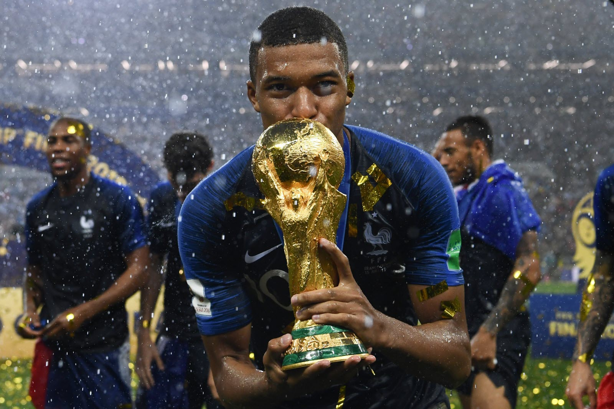
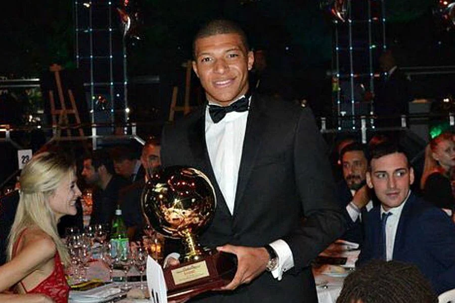

Champion du Monde - 2018
Kylian Mbappé a marqué l'histoire du football en devenant champion du monde avec l'Équipe de France en 2018. À seulement 19 ans, il a été un des acteurs clés du parcours exceptionnel des Bleus, en inscrivant notamment un superbe but en finale contre la Croatie (4-2). Ce titre reste l'un des plus grands exploits de sa carrière.
Champion de France avec le PSG - 2019, 2020, 2021, 2022

Avec le Paris Saint-Germain, Mbappé a remporté plusieurs titres de champion de Ligue 1, consolidant son statut de star du football français. Ses performances exceptionnelles sur le terrain, sa rapidité et ses buts ont fait de lui une pièce maîtresse de l'attaque parisienne.
Vainqueur de la Coupe de France - 2020

En 2020, Kylian Mbappé a également remporté la Coupe de France avec le PSG, contribuant à la victoire de son équipe contre l'AS Saint-Étienne. Lors de cette finale, il a inscrit un but et a été l'un des grands artisans de ce triomphe.
Meilleur jeune joueur du monde - 2017
En 2017, Kylian Mbappé a été élu Golden Boy, récompensant le meilleur jeune joueur de football au monde. Ce prix est venu couronner une année 2017 exceptionnelle où il a brillé au Monaco, avant de rejoindre le PSG pour l'une des plus grosses transactions de l'histoire du football.